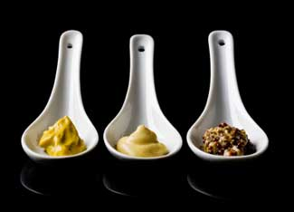

“Oh yes mustard! That'll do ... Mustard? Don't let's be silly. Now lemon, that's different.” -Mad Hatter, Alice in Wonderland
Tangy or sweet, subtle or potent or super spicy, mustard is a lot of things, but even made with limes (or lemons, if you rather), it’s hardly silly. Delicious is more like it. In fact, the only silly thing about mustard may be sticking to the ordinary types in squeeze bottles you find at supermarkets. But there’s no reason to just be silly. You can make zippy, zingy and easy mustards with truly unique flavors right at home.
There are three types of mustard seeds generally used for cooking: black, brown and white (sometimes called yellow), which you can find at your local grocery store. Black and brown seeds are often used in hotter, more pungent mustards, while white seeds are usually used in the milder mustards favored in the United States. Mustard powder can be found in the herbs or bulk herbs aisle at your grocery store, or made by finely grinding mustard seeds using a mortar and pestle.
Using any type of mustard seed, the flavor is most potent when the prepared mustard is fresh, and becomes less intense over time. And while a basic mustard simply involves soaking tangy mustard powder (or ground mustard seeds) in vinegar, water or other liquid, once you start experimenting with herbs and other flavors, the possibilities are endless!
Lime Mustard with Coriander, from Mustards, Ketchups & Vinegars, by Carol W. Costenbader
2 1/8 cups white mustard seeds, ground
2 tbsp mustard powder
1/2 cup water
2/3 cup white wine vinegar
1/4 cup honey
1/4 cup sugar
2 tsp salt
2 tsp ground coriander seeds
Grated zest (rind) of 1 lime
2 1/4 tbsp lime juice
In a bowl, combine the ground mustard seeds and mustard powder with the water. Allow to marinate for 3 hours. Transfer the mixture to a food processor, and gradually add the other ingredients except the lime juice when processing. Sample the mixture, adding enough of lime juice to make it smooth. Spoon into small sterilized jars. Cap the jars tightly, and label. Store in the refrigerator for several months. Yields 2 cups.
Hotter Than Hot Mustard, from Mustards, Ketchups & Vinegars, by Carol W. Costenbader
1/2 cup cold water
2 cups mustard powder
1/2 cup cider vinegar
1/2 cup vegetable oil
1/2 cup packed brown sugar
Pinch of salt
Gradually whisk the water into the mustard powder, beating out all the lumps. Let rest for 15 minutes. Any bitterness from the mustard powder will disappear during this time. Whisk in the vinegar and oil, mixing until smooth. Mix in the brown sugar and salt, and stir until smooth. Ladle the mustard into small sterilized jars. Cap tightly, label and store in the refrigerator for up to 2 months. Yields 2 cups.
Tarragon & Green Peppercorn Mustard, from Herbal Vinegar, by Maggie Oster
1/4 cup light or dark mustard seeds
1/3 cup tarragon white wine vinegar*
1/3 cup water
1/4 cup dry white wine
1 tbsp fresh tarragon, minced
1 tbsp green peppercorns, crushed
1 tbsp honey or 2 tbsp sugar
1 tsp salt
1/8 tsp ground cloves
*You can make your own tarragon white wine vinegar by steeping fresh tarragon in heated white wine vinegar (store in a sterilized jar).
Combine mustard seeds, vinegar, water and wine in a bowl. Let sit for 4 hours, uncovered, stirring occasionally. Transfer to a blender or food processor. Process to the desired consistency, from slightly course to creamy. Pour into the top of a double boiler over simmering water. Stir in the remaining ingredients. Cook for 10 minutes, or until thickened, stirring often. Mustard will be thicker when cooled. Pour into sterilized jars, cap tightly, and store in the refrigerator. Wait several days before using to allow flavors to blend. Yields 1 cup.
Cranberry Honey Mustard, courtesy Epicurean.com
As the dried cranberries soak with the mustard and vinegar, their bright red color leaches out into the vinegar. The resulting mustard is a pretty, cranberry-tinted pink.
3/4 cup yellow mustard seeds
1 1/2 cups cider vinegar
1 1/4 cups dried cranberries
3 tbsp honey
1 tsp salt
In a non-aluminum pot or jar, combine the mustard seeds, vinegar and cranberries; cover and soak for 48 hours, adding additional vinegar if necessary to maintain enough liquid to cover the seeds.
Scrape the soaked seed-and-cranberry mixture into a food processor and process until the mixture turns from liquid and seeds to a creamy consistency flecked with seeds and bits of cranberry. Add honey and salt. The process takes at least 3 to 4 minutes, so be patient. You may need to add additional vinegar as necessary to create a nice creamy mustard; keep in mind that it will thicken slightly upon standing.
After about 1 week of aging, the cranberry flavor seems to settle into this mustard and make it all the better, but it is perfectly good immediately. Yields about 3 1/3 cups.
Honey Stout Mustard, courtesy Fabulousfoods.com
1 cup yellow mustard seeds
1 cup brown mustard seeds
1 1/2 cups English stout (such as Guinness)
3/4 cup cider vinegar
1 small onion, finely minced
4 cloves garlic, minced or pressed
1 tbsp brown sugar
4 tbsp honey
1/3 cup mustard powder
1 tsp allspice
1/2 tsp turmeric
1 tsp salt
Soak mustard seeds in stout for at least 4 hours (add more stout if necessary to keep seeds covered). In a heavy saucepan, combine vinegar with the onion, garlic, brown sugar, honey, mustard powder, allspice, turmeric and salt. Simmer, uncovered, over medium heat until reduced by half (about 10 to 15 minutes). Pour reduced liquid through a strainer into mustard-and-stout mixture. Process in food processor or blender until coarsely ground. Return mixture to saucepan and cook over medium-low heat, stirring constantly for about 5 minutes or until slightly thickened (it will thicken more as it cools). Let cool and pack into sterilized jars and cover tightly. Store, refrigerated, for up to 2 years (although mustards do lose their potency over time). Yields 3 1/2 cups.
Have you ever made mustard from scratch? Share your favorite recipes below. And when you try any of the above, let us know what you think!
|
 ISTOCKPHOTO Spicy or sweet, mustard is easy to make at home, and the flavor possibilities are endless! |
|
|